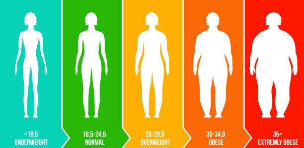

FitTrack
Calculer votre indice de masse corporelle
Votre IMC est de : Kg/m2

vous etes en situation de .
Pour ameliorer votre bien-etre et atteindre vos
objectifs de sante ou pour maintenir votre état
actuelle , nous vous invitons à vous inscrire à notre
application FitTrack . Avec FitTrack , vous pourrez
suivre vos progres , recevoir des conseils
personnalisés et restait motiver tout au long de votre parcours.
Inscrivez-vous dés maintenant et commencer votre transformation vers
une vie plus saine et plus équilibrée
S'inscrire
Si vous disposez d'un compte FitTrack , veuillez vous
connectez en cliquant sur le lien ci-dessous:
Me connecter a mon FitTrack